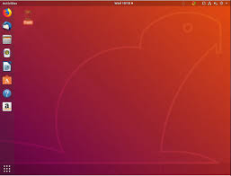
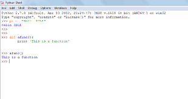

ICS ASSIGNMENT:
Q1)Install linux?
Q2)Install python?
Q3)Why a combination of breadth-first+ programming-first approaches?
ANS)Breath first search(BFS) is an important graph search algorithm that is used to solve many problem including finding the shortest path in a graph and solving puzzle games(such as Rubik’s cubes) . Many problems in computer science can be thought of in terms of graphs. For example analyzing networks, mapping routes and scheduling are graph problems . Graph search algorithm like breadth first search are useful for analyzing and solving graph problems.
BFS starts by searching a start node ,followed by its adjacent nodes, then all nodes that can be reached by a path from the start node containing two nodes, three nodes and so on.
Q4)Why we are shifting from C# to python as first programming language?
ANS)
C# and python both languages are very useful programming language. But now a days, we are shifting C# to python for these reasons:
EASY TO UNDERSTAND:
Python comes with some outstanding features. It’s easy to in python and the languages readability is high. It’s open sourced(even for commercial projects) under the GPL license. It has many perks It has many perks ,including a rich standard library and python can easily integrate with many other languages and platforms.
SPEED:
When we talk about speed ,here we mean your speed,not the program’s speed (we will get to that in performance). To start,python was designed to be coded. That might sound odd(as all languages are meant to be coded). But python really takes the programmer into account. Python has a lot of whitespace and easy readability.
It also has a much simpler syntax than C# for example, printing out your name in C# takes around 10 lines of code. The same task can be accomplished in two with python.
READABILITY:
I mentioned before that python is readable(may be more than once),but there’s a good reason why C# uses what many languages use to delineate its blocks of code: nested curly braces and brackets. While this kind of code can be made readable ,it does not have to be . Python on the other hand has white space built into its DNA. It uses whitespaces to delineate blocks of code. This means that instead of a grass field of curly braces ,you either code with neat indents or your code just won’t run. Whether python is more attractive without the curly braces frings is upto the reader, but many prefer it over C#.
APPLICATION:
C# and python are both general purpose language. They can be used for anything from game development to machine learning .But that does not make then equal python is machine learning royality . Python has an enormous number of software choices for a machine language learning programmer: NUMPY, SCIPY, TENSORFLOW, KERAS and more.
Q5)Differentiate between computer science, software engineering and information technology?
|
COMPUTER SCIENCE |
INFORMATION TECHNOLOGY |
SOFTWARE ENGINEERS |
|
Computer scientist understand the “why” behind computer programs and use algorithm and advanced mathematics to invent new ways to manipulate and transfer information. |
It professionals knows how to design and create information system and are more likely to interact with clients. |
Software engineers understandand can create the background computer system such as operating system |
|
Computer scientist work identify and solve problem using technology. |
It is the application of computer science and software engineering theory and practice. |
Software engineers design and build high quality computer software system |
|
In computer science, you learn about the fundamental concepts and theories. |
Strong focus on user design and innovation |
Software engineers solve problems of based and non web based software development |
|
This disciplane involve, the study of computational thinking and discrete mathematics(logics) |
UQ’s bachelor of IT is accrediated by the Australian computer society(ACS).ACS was the first computer society. |
Software engineers test and evaluate the software application and system |
Q6)Top job careers of computer scientist?